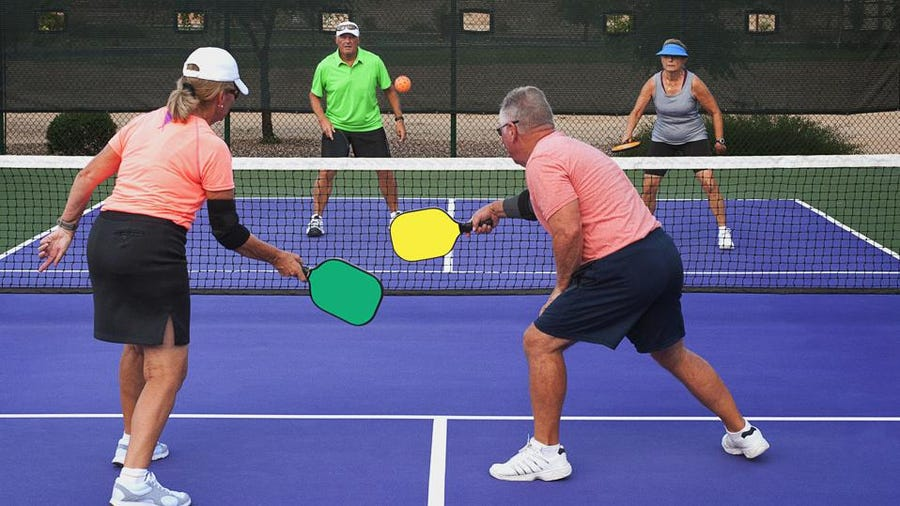
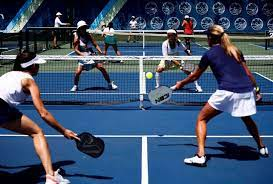

Pickleball is an indoor or outdoor racket/paddle sport where two players (singles), or four players (doubles), hit a perforated hollow plastic ball over a 36-inch-high (0.91 m) net using solid-faced paddles. Opponents on either side of the net hit the ball back and forth until one side commits a rule infraction. Pickleball was invented in 1965 as a children's backyard game on Bainbridge Island, Washington, US. In 2022, pickleball was adopted as the official state sport of Washington.
匹克球也称为泡菜球，是一项室内或室外球拍/桨运动，其中两名球员（单打）或四名球员（双打）使用实心球拍在 0.91 米高的网上击打穿孔空心塑料球。网两侧的对手来回击球，直到一方违反规则。匹克球于 1965 年问世，起源于美国华盛顿州班布里奇岛，是一款儿童游戏。2022 年，匹克球成为华盛顿州的官方运动。
Between 1965 and 2020, it became a popular sport in the US Pacific Northwest, and in the meantime began to grow elsewhere. In 2021, 2022 and 2023, the sport was named the fastest-growing sport in the United States by the Sports and Fitness Industry Association, with over 4.8 million players. A growing interest in the sport is attributed to several factors, including a short learning curve, appeal to a wide range of ages and fitness levels, and low startup costs. There are now thousands of pickleball tournaments throughout the United States, including the US National Championships and the U.S. Open Tournament, along with two professional tours and one professional league. Pickleball is also experiencing growth outside the United States with several other national and international competitions.
1965年至2020年，皮克球流行于美国太平洋西北地区，同时在其他地方开始发展。2021年、2022年和2023年，这项运动被体育和健身产业协会评为美国增长最快的运动，有超过480万名球员参与其中。人们对皮克球运动的兴趣与日俱增，原因有：学习时间短，对各种年龄和健身水平的人都有吸引力，启动成本低。现在整个美国有数千场皮克尔球比赛，包括美国全国锦标赛和美国公开赛，两个职业巡回赛和一个职业联赛。皮克球运动在美国以外的地区也在逐渐发展。
 The regulation size of the court is 20 feet (6.1 m) by 44 feet (13 m) for both doubles and singles, the same size as a doubles badminton court. A line seven feet from the net is the non-volley line. Twenty-two feet from the net, the baseline marks the outer boundary of the playing area. The area bounded by the non-volley line, the sidelines, and the net, including the lines, is known as the non-volley zone or "kitchen". The area between the non-volley line and the baseline is the service court. A center line divides the service court into left and right sides.Regulated tournaments and games are usually played on a specialized polyurethane sport surface; however, courts are often set up on concrete, Astroturf, and indoor basketball courts.
单双打球场的尺寸为20英尺（6.1米）×44英尺（13米），与双打羽毛球场尺寸相同。离网7英尺的线为非伏线。离网22英尺出有一条底线，标志着比赛区域的外部边界。由非排球线、边线和球网所围成的区域，被称为非排球区或 “厨房”。非排球区和底线之间的区域称为发球区。一个中心线将发球区分为左右两边。规范的锦标赛和其他比赛通常是在聚氨酯表面上进行的；但是，球场通常是在混凝土、草坪和室内篮球场上设置的。
The net is 36 inches (0.91 m) high on the ends and 34 inches (0.86 m) high at the center. The net posts should be 22 feet (6.7 m) from the inside of one post to the inside of the other post.
球网两端高36英寸（0.91米），中心高34英寸（0.86米）。网柱从一个柱子的内侧到另一个柱子的内侧应该是22英尺（6.7米）。
A Wiffle ball was the original ball used when the game was invented. USA Pickleball (USAP) and the International Federation of Pickleball (IFP) have since adopted specific ball standards unique to pickleball. Balls must be made of a durable molded material with a smooth surface and must have between 26 and 40 evenly spaced circular holes. They must weigh between .78 and .935 ounces (22.1 and 26.5 g) and measure between 2.87 and 2.97 inches (73 and 75 mm) in diameter. Tournaments sanctioned by the USAP and IFP must choose from a list of pre-approved balls found on the USAP and IFP websites. Balls with smaller holes are generally used for outdoor play to minimize the effects of wind, but any sanctioned ball can be used for either indoor or outdoor play.
皮克球运动创立时使用的原始球称为Wiffle球。美国皮克尔球协会（USAP）和国际皮克尔球联合会（IFP）后来采用了皮克尔球特有的标准。球必须由耐用的模制材料制成，表面光滑，必须有26至40个间隔均匀的圆孔。它们的重量必须在0.78至0.935盎司（22.1至26.5克）之间，直径在2.87至2.97英寸（73至75毫米）之间。由USAP和IFP认可的比赛必须从USAP和IFP网站上的预先批准的球列表中选择。 小孔的球一般用于室外比赛，以减少风的影响。但任何符合标准规范的球都可以用于室内或室外比赛。
For sanctioned games, USAP and IFP paddle size standards say the combined length and width of the paddle shall not exceed 24 inches (0.61 m); the length cannot exceed 17 inches (0.43 m).There are no requirements regarding thickness or weight. The paddle must be made of a noncompressible material, and the surface of the paddle must be smooth with no texturing. Paddles used in sanctioned tournaments must be on the list of preapproved paddles found on the USAP and IFP websites.
USAP和IFP规定了球拍尺寸标准，球拍的长度和宽度之和不得超过24英寸（0.61米）；长度不得超过17英寸（0.43米），对厚度和重量没有要求。球拍必须由不可压缩的材料制成，桨的表面必须是光滑的，没有纹理。在认可的比赛中使用的球拍必须是在USAP和IFP网站上找到的预先批准的球拍名单。